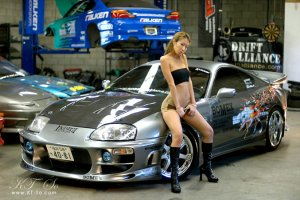

1994 TOYOTA SUPRA
Part I: The Interview
Ktown213:
Hello, give our viewers a quick intro about yourself.
Ben Leongson: Hey Ktown! My name is
Ben Leongson Im from Glendale, but work in Irvine as an account manager
for a mortgage lender. I fix up cars as a hobby, and I'm currently working
on a 350Z (which is in the making) and my brother's Toyota Supra TT. I'm
always in Ktown woo woo!
Kt213: Thanks Ben, how'd you get in
the scene?
BL: My brother started a crew back in
1994 called 'Boneout' with a 1991 Acura Integra with the basic bolt on
mods back then, Piaa foglights, cut springs, 15" sparco wheels, fuba
antennas, and the pull out radio *tape" deck. We found fixing up cars as a
way of staying out of trouble, as a lot of us did back in the day.
Kt213: Tell us about your crew!
BL: Team Boneout is the name of our
crew, started in 1994 with the 5 infamous highschool kids from various
umm..gangs (that was the cool thing back in the 1994 era but thankfully we
all grew outta that stage). I revived the crew in 1999 with a 2nd
generation of car enthusiasts. To us, its not just a trend like some folks
out there, it's a way of life. Most of our cars are for the tracks but
some are for shows.
Kt213: Any shout-outs or words of
advice?
BL: I believe that if you have a fixed
up car you should just have fun with it. Don't turn it into a
carpet-queen. Drive that sucker as much as you can, I know I do.
Part II : The Specs |
Exterior |
|
 |


All Photos taken by the owner